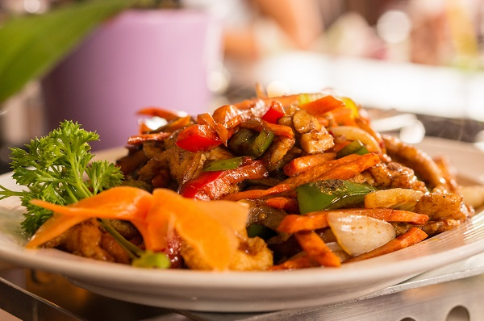

Wok Recipe

Ingredients for 6 to 8 servings
- 1 tablespoon vegetable oil
- 1 tablespoon sesame oil
- 2 pounds boneless, skinless chicken breast, cut into 1⁄2-inch pieces
- 1 bunch broccoli, cut into florets
- 1 package shiitake mushrooms
- 2 to 3 carrots, thinly sliced
- 1 cup onion, diced
- 1 (8-ounce) can sliced water chestnuts, drained
- 1 cup chicken broth
- 1/4 cup hoisin sauce
- 1 tablespoon soy sauce
- 1 teaspoon powdered ginger
- 2 tablespoons cornstarch
- Serving suggestion: Hot, cooked rice noodles
Instructions
- In a large skillet, heat the oils over medium-high heat. Add the chicken and cook for 4 to 5 minutes or until lightly browned.
- Add broccoli, mushrooms, carrots, pepper, and onion and cook an additional 5 minutes, stirring frequently.
- Stir in the water chestnuts.
- In a small bowl, combine broth, hoisin sauce, soy sauce, ginger, and cornstarch.
- Add to chicken mixture and bring to a boil over medium-high heat.
- Reduce heat to medium to medium-low, and simmer for 4 to 5 minutes, or until sauce thickens.
- Serve over hot, cooked rice noodles.
Comments
Martin Kalle | 2015-05-05
Good food!
Olle fat | 2015-01-01
Love your cooking!
Anna gotlan | 2014-09-23
10/10